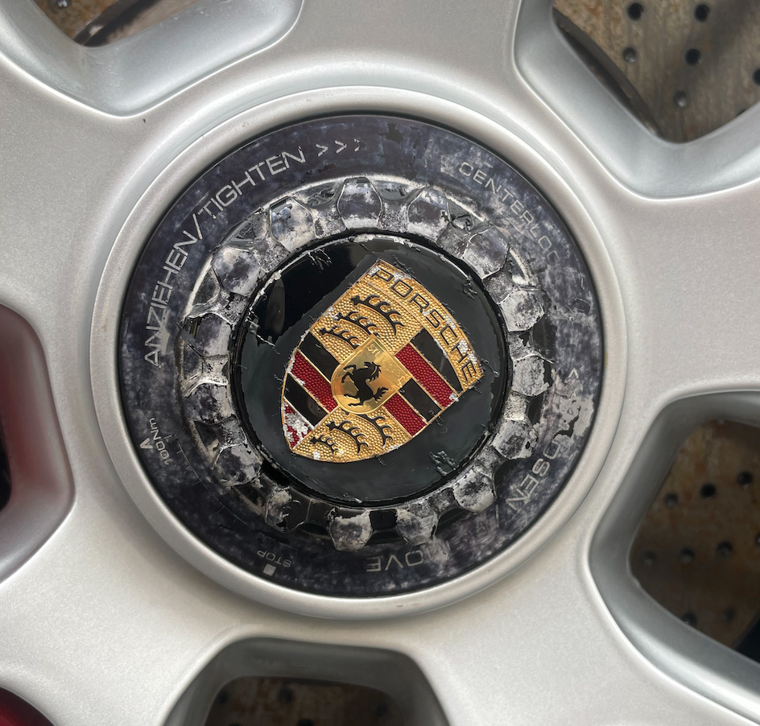
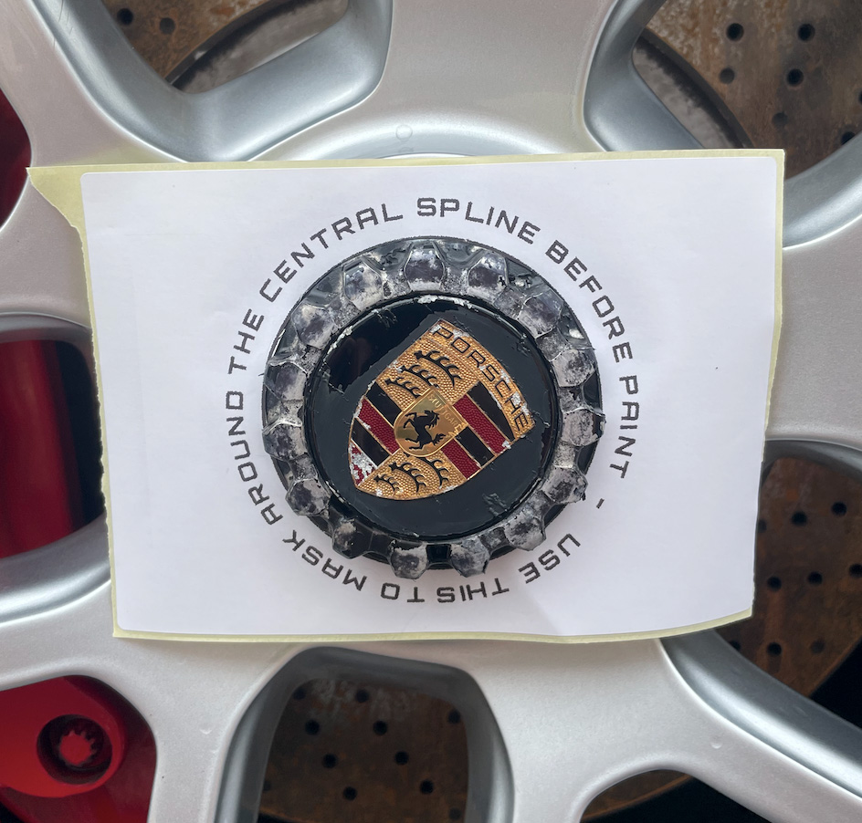
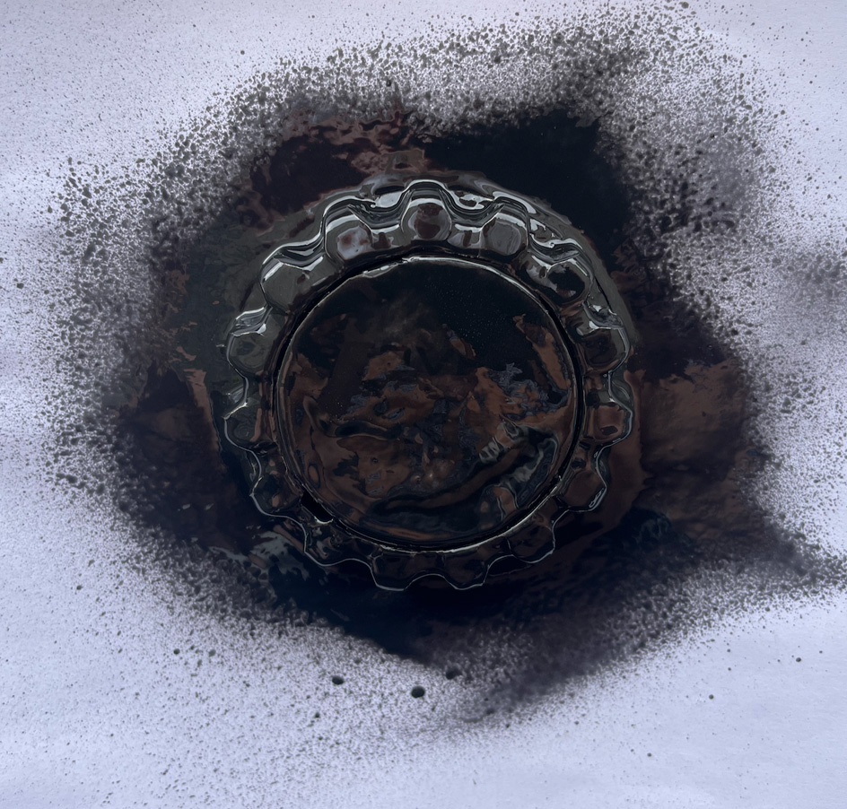
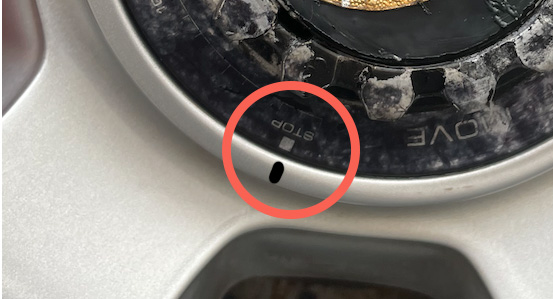

This guide provides step-by-step instructions for using the Centerlock Refresh Kit. Follow each step carefully, ensuring you have all necessary tools and materials ready before starting.
Before you begin, please ensure you have read the disclaimer.
Before you begin, ensure you have the following items from the Centerlock Refresh Kit:
What you'll also need:
Ensure the surface of the centerlock nut is clean and dry. Use the alcohol wipe provided in the kit to remove any hidden dirt or grease.
Use the spline masks fitted around the the toothed spline part of the centerlock nut. This will protect it from paint during the application process. Ensure the mask is applied evenly and securely to prevent any paint from seeping through.
There are two types of center cap masks in the kit. Use one that either covers the whole cap, or just the Porsche emblem, if you want to refinish the center cap at the same time.
It's highly recommended to protect the rest of the wheel from paint. Use a rag, newspaper, or other material to cover the exposed areas betwen the centerlock nut and the tyre. This will prevent any accidental paint splatters or overspray.
At this point you're ready to paint the toothed spline part of the centerlock nut.
The paint provided is a high-quality rubberised paint. It's durable, flexible, but also removable if required.
It's recommented to apply 2-3 thin coats of paint, allowing 30 minutes between each coat for optimal adhesion and finish.
The paint looks glossy when wet, but dries to a matte finish.
It's a good idea to do this in a garage, or on a still, dry day, with low wind and no rain for at least 4 hours
After the final coat (but before the paint is fully dry), carefully remove the spline masks and center cap masks.
Gently pull the spline mask towards you in a smooth, careful motion, being careful not to smudge the wet paint.
Use the toothpick to carefully lift the edges of the center cap mask, then pull it off gently.
It's a good idea to carefully run the toothpick around the edge of the center cap to ensure the rubberised paint doesn't bridge the gap between the cap and outer toothed spline.
If there is any unwanted paint on the center cap, you can gently dab it off by wrapping the toothpick in the alcohol wipe.
Allow the paint to dry fully (4-6 hours).
Using the existing markings on the centerlock nut, use a pencil or drywipe marker to discreetly mark the 'stop' position on the wheel (you'll wipe this off later)
Once the paint is fully dry, you can apply the outer decal to the centerlock nut.
Ensure the surface is still clean, dry and free from dust or debris.
Gently peel the decal from its backing and position it carefully on the outer rim of the centerlock nut, ensuring the 'stop' position aligns with the mark you made earlier.
Press down firmly to ensure the decal adheres well, smoothing out any bubbles or wrinkles as you go.
Finally, wipe off the pencil or drywipe marker mark you made earlier.
Your centerlock nut should now look fantastic again and is ready to enjoy.
Taking care of your refreshed centerlock nuts is essential for maintaining their appearance. Here are some tips for aftercare: